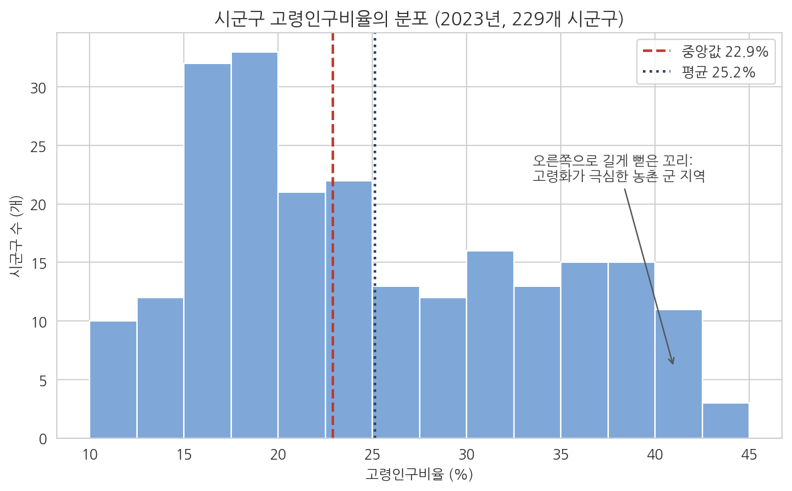
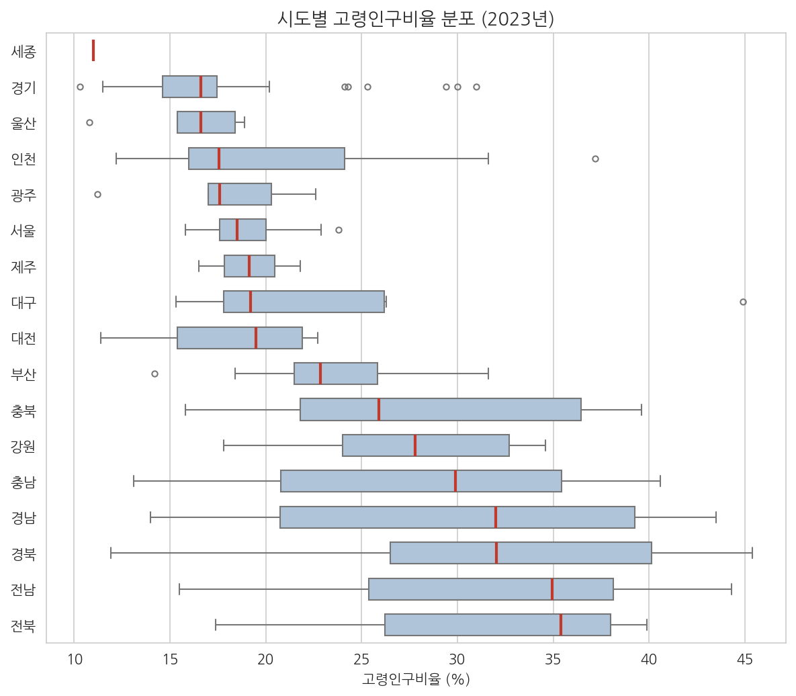
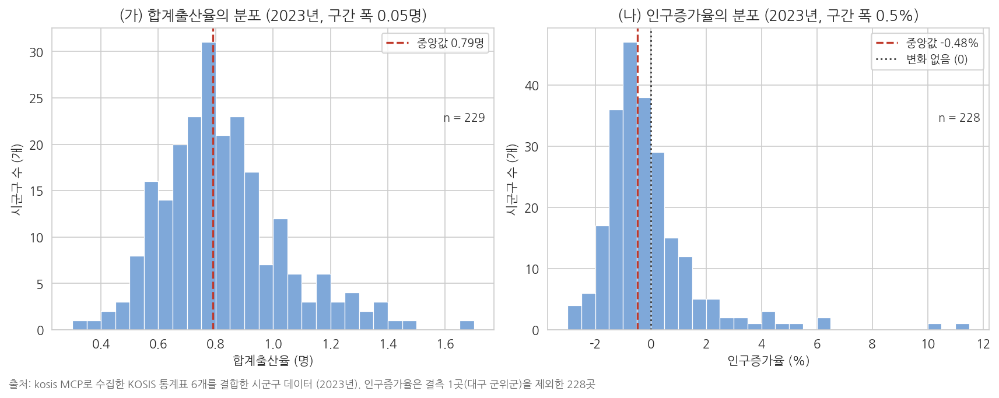
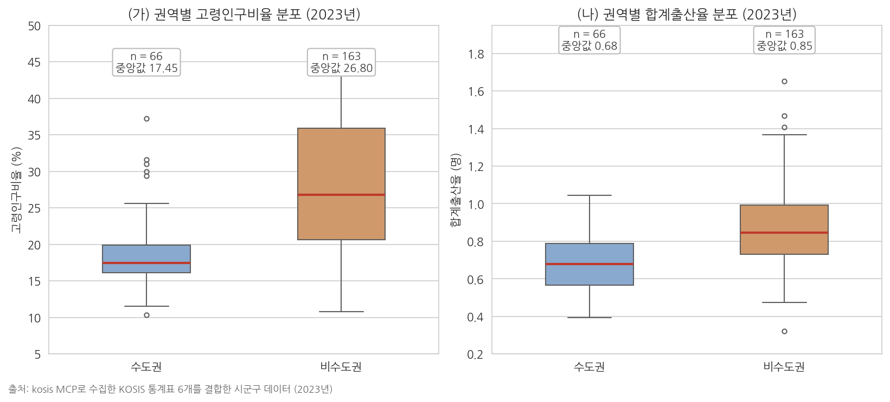
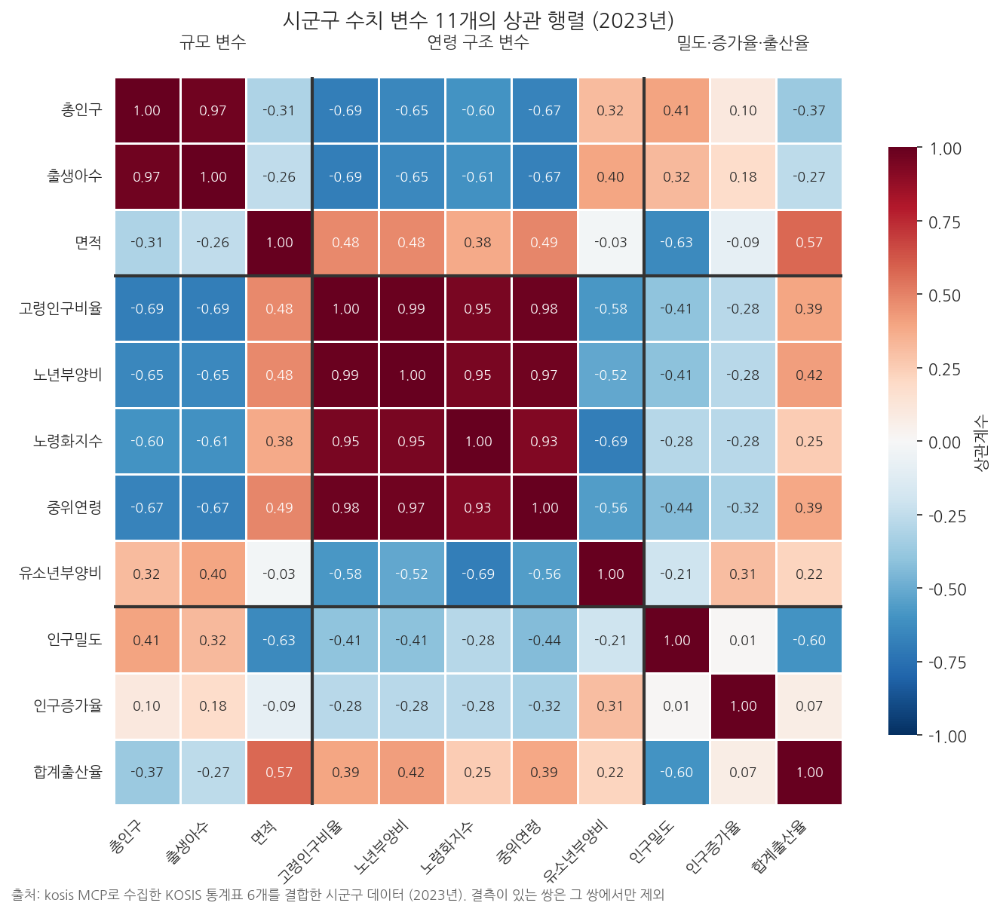
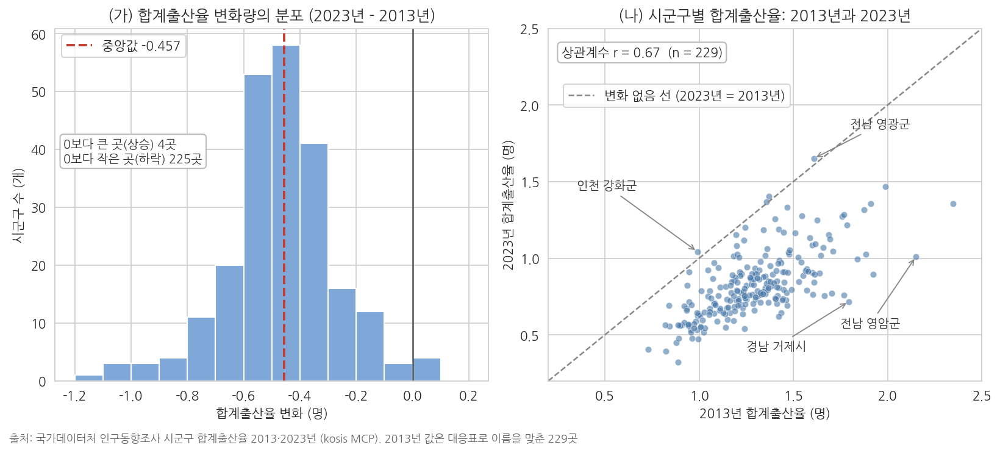
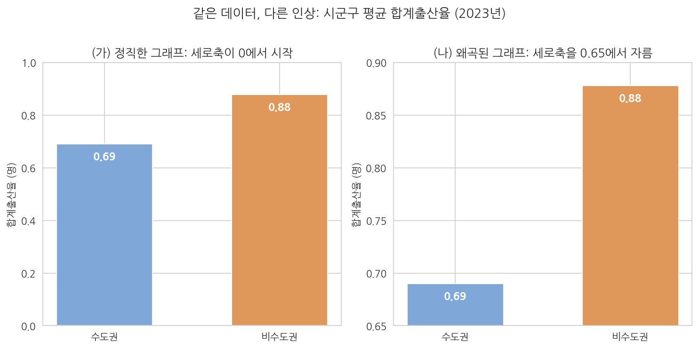
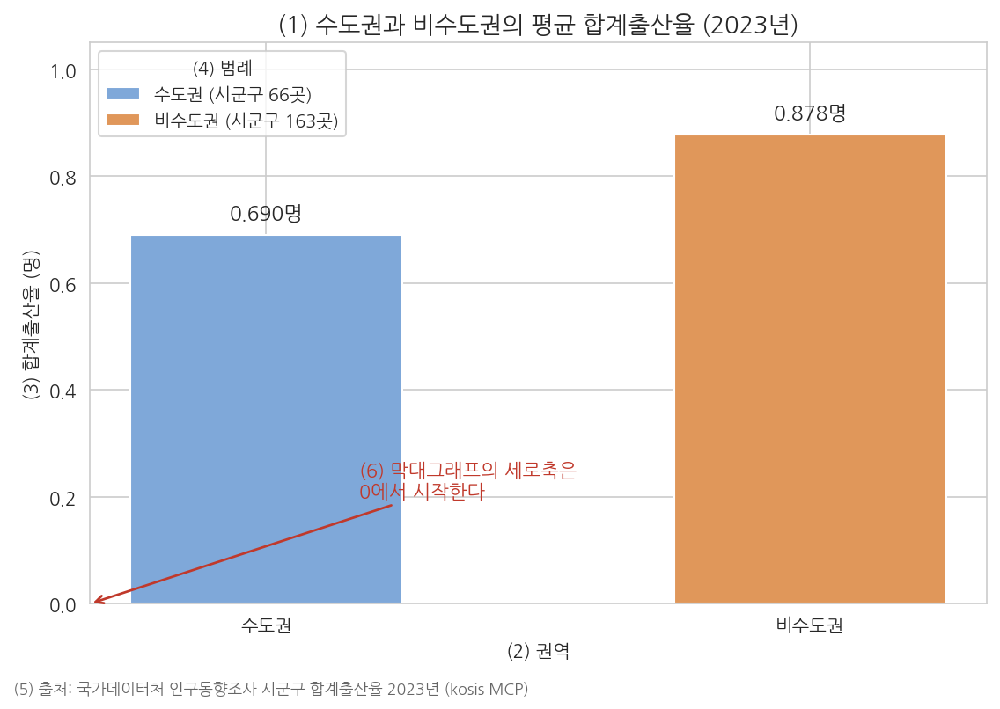

9주차 2차시. 공통 데이터를 모아 에이전트로 EDA 수행하기
최종 수정: 2026-10-22 · 이 교재는 학기 중에도 계속 업데이트됩니다
이 실습에서 하는 것
이번 실습은 두 부분으로 이루어진다. 앞부분(2.1-2.2)에서는 6주차에 배운 방식대로 kosis MCP 도구를 직접 불러 KOSIS 통계표 여섯 개를 받아, 7주차에 익힌 결합 방식으로 전국 229개 시군구의 인구 지표 파일 하나를 만든다. 이 파일이 11주차부터 14주차까지 모든 실습이 쓰는 공통 데이터다. 뒷부분(2.3부터)에서는 그 파일로 탐색적 데이터 분석(EDA)을 한다. 에이전트에게 그림을 그리게 하고, 나온 그림은 내가 읽는다. 1차시에서 배운 개념은 그것이 필요한 단계에서 화면에 나온 그림을 놓고 다시 짚는다. 단계마다 있는 "먼저 알아 둘 것"과 "짚고 가기"가 그 자리다.
EDA의 순서는 표준 순서를 따른다. 변수 하나의 분포(히스토그램, 박스플롯)에서 시작해, 변수 두 개의 관계(산점도)로 나아가고, 시간의 흐름(시계열 그림)으로 마친다. 여기에 두 집단의 비교(수도권과 비수도권)와 두 시점의 비교(2013년과 2023년)를 더하고, 그림마다 해석 한 단락을 자기 문장으로 쓴다.
이 실습이 끝나면 다음이 만들어져 있어야 한다.
data/raw_mcp/폴더의 MCP 응답 CSV 열 개와 수집기록.md- 공통 데이터
data/sigungu_mcp_2023.csv(229행 × 14열)와data/sigungu_mcp_tfr_2013.csv(2013년 합계출산율) - 산출물 폴더의 그림 여섯 개(히스토그램, 박스플롯, 산점도, 시계열, 권역 비교 박스플롯, 두 시점 비교 그림)와 그림마다 해석 한 단락이 붙은 'EDA보고_9주차.md'
- 두 변수의 분포 요약, 상관 행렬, 극단값 목록, 그림 규격 문서, 그리고 EDA 그림 세트를 한 번에 그리는 스킬(선택 심화)
준비물
| 구분 | 내용 |
|---|---|
| 폴더 | 3주차에 만든 uv 기반 분석 프로젝트 폴더 (data, code, 산출물 하위 폴더) |
| 데이터 | 2.1-2.2에서 직접 만든다: data/sigungu_mcp_2023.csv, data/sigungu_mcp_tfr_2013.csv (출처: 행정안전부 주민등록인구·e-지방지표, 국가데이터처(옛 통계청) 인구동향조사·인구총조사, 국토교통부 지적통계. kosis MCP로 수집). 시계열 그림에는 data/income_dist.csv(국가데이터처 소득분배지표)를 쓴다. 수집이 막히면 저장소의 같은 이름 파일을 내려받아 2.3부터 진행한다 |
| 도구 | VSCode + Claude Code, 6주차에 연결한 kosis MCP, pandas·matplotlib·seaborn·koreanize-matplotlib가 설치된 uv 환경 |
| 선수 내용 | 9주차 1차시 (그림의 종류와 읽는 법, 시각화 윤리), 7주차 (결측, 병합 키, 대응표), 6주차 (MCP 조회, 건수 기준, 수집기록) |
2.1 kosis MCP로 공통 데이터 수집하기
무엇을 왜 하는가. 11주차 이후의 분석은 모두 시군구 단위의 인구 지표 하나를 쓴다. 그 파일을 오늘 직접 만든다. 필요한 값은 인구, 고령화, 인구 변화, 출산, 면적, 부양비의 여섯 갈래이고, KOSIS에서는 각각 다른 통계표에 들어 있다. 표마다 kosis MCP의 조회 도구를 불러 응답을 그대로 CSV로 저장하고, 결합은 2.2에서 따로 한다. 받는 단계와 합치는 단계를 나누면 문제가 생겼을 때 어느 쪽 문제인지 가릴 수 있다. 6주차 2차시 2.4에서 표를 고르는 단계와 값을 받는 단계를 나눈 것과 같은 이유다.
받을 표와 조회 조건은 표 9-3와 같다. 표 ID와 조건은 저자가 KOSIS에서 미리 골라 둔 것이므로 학생은 이 표를 보고 지시문에 말로 옮긴다.
표 9-3. 공통 데이터에 쓰는 KOSIS 통계표와 조회 조건 (모두 2023년)
| 만들 열 | 통계표 (작성 기관) | 기관 ID / 표 ID | 조회 조건 | 응답 건수 |
|---|---|---|---|---|
| 총인구 | 주민등록인구(시도/시/군/구) (행정안전부) | 101 / DT_1YL20651E | 항목 전부(계·남·여), 지역 전부 | 738 |
| 고령인구비율 | 고령인구비율(시도/시/군/구) (e-지방지표) | 101 / DT_1YL20631 | 항목 고령인구비율, 지역 전부 | 246 |
| 인구증가율 | 인구증가율(시도/시/군/구) (e-지방지표) | 101 / DT_1YL20621 | 항목 전부(당해년 총인구, 전년 총인구, 인구증가율), 지역 전부 | 737 |
| 합계출산율, 출생아수 | 시군구/출생아수 합계출산율 (인구동향조사) | 101 / DT_1B81A23 | 항목 전부(출생아수, 합계출산율), 지역 전부. 2013년도 같은 표에서 합계출산율만 | 558 (2013년 281) |
| 면적 | 행정구역별·지목별 국토이용현황_시군구 (지적통계) | 116 / DT_MLTM_2300 | 항목 면적, 시도 전부, 시군구 전부, 지목은 계 | 279 |
| 유소년부양비, 노년부양비, 노령화지수, 중위연령 | 주요 인구지표(부양비, 노령화지수, 중위연령 등) 시군구 (인구총조사) | 101 / DT_1IN2030 | 구분 총인구, 지역 전부, 항목은 하나씩 네 번 | 각 324 |
먼저 알아 둘 것. 지시문의 짜임새는 6주차 2차시 2.4-2.6과 같다. 표 ID와 조회 조건(연도, 항목, 지역)을 말로 적고, 건수 기준과 기준에 어긋났을 때 할 일, 저장 경로, 서버 안내문의 원문 유지를 함께 적는다. 항목을 전부 받는 표(주민등록인구, 인구증가율, 합계출산율)와 하나로 지정하는 표(고령인구비율, 면적)는 표 9-3의 조회 조건 칸을 그대로 옮긴다. 부양비 표는 항목 여섯 개와 구분 두 개를 한 번에 받으면 응답이 너무 길어 서버가 중간을 잘라 보낸다. 그래서 구분을 총인구 하나로 좁히고 항목을 하나씩 네 번 받으며, 이 이유도 지시문에 적는다.
"kosis MCP를 써서 기관 ID 101의 통계표 DT_1YL20651E(주민등록인구(시도/시/군/구))에서 2023년 값을 조회해 줘. 지역은 전국·시도·시군구 전부, 항목은 계·남·여 전부야. 조회하기 전에 표의 항목과 분류를 확인하고, 지역 수에 항목 수를 곱한 건수 기준을 먼저 말해 줘. 받은 건수가 기준과 다르면 저장하기 전에 이유부터 보고해 줘. 건수가 맞으면 응답 표는 열 이름과 행 순서를 바꾸지 말고 그대로 data/raw_mcp/mcp_주민등록인구_DT_1YL20651E_2023.csv로 저장하고, 수집기록.md에 표 ID, 조회 조건, 건수를 한 행으로 추가해 줘. 서버 안내문은 요약하지 말고 원문 그대로 화면에 남겨 줘."
예상되는 에이전트의 행동과 결과. 6주차 2차시 2.3-2.4에서 본 순서가 그대로 지나간다. 도구 사용 로그에 kosis_table_info 호출이 나타나 표의 항목과 분류를 읽고, 에이전트가 건수 기준 738건을 말한 뒤, kosis_get_data를 한 번 부른다. 응답은 "주민등록인구(시도/시/군/구) [DT_1YL20651E] (738건)"이라는 제목 아래 분류1 | 항목 | 값 세 열의 표로 오고, 첫 줄들은 다음 모양이다.
| 분류1 | 항목 | 값 |
| 전국 | 계 | 51325329 |
| 전국 | 남 | 25565736 |
| 전국 | 여 | 25759593 |
| 서울특별시 | 계 | 9386034 |
...
| 종로구 | 계 | 139417 |
응답 첫머리에는 6주차에서 본 시범서비스 안내가, 끝에는 출처와 KOSIS 바로가기 링크가 붙는다. 저장 뒤 수집기록.md에 표 ID와 조회 조건, 건수 738이 한 행 추가된다.
짚고 가기: 응답에는 지역 코드가 없다. 방금 받은 표의 분류1 열을 보면 "전국", "서울특별시", "종로구"처럼 지역 이름만 있고 행정구역 코드는 없다. 서울특별시 행 뒤에 종로구부터 강동구까지 25개 구가 이어지고, 그다음에 부산광역시 행이 오는 식이다. 어느 구가 어느 시도에 속하는지는 행의 순서로만 알 수 있다. 이 순서를 이용해 시도 열을 만드는 일을 2.2에서 한다. 738건은 전국 1개, 시도 17개, 시군구 228개를 합한 246개 지역에 항목이 셋씩 붙은 수다. 세종특별자치시는 시도 행 하나만 있고 그 아래 시군구가 없다.
나머지 표는 한 번의 부탁으로 차례로 받는다.
"kosis MCP를 써서 아래 표들을 하나씩 차례로 조회해 줘. 표마다 조회하기 전에 항목과 분류를 확인하고 건수 기준을 먼저 말해 줘. 받은 건수가 기준과 다르면 그 표는 저장하기 전에 이유를 보고하고 내 답을 기다려 줘. 건수가 맞으면 응답 표는 열 이름과 행 순서를 그대로 두고 data/raw_mcp/ 폴더에 'mcp_내용_표ID_연도.csv' 형식의 이름으로 저장하고, 수집기록.md에 표마다 ID, 조회 조건, 건수를 한 행씩 추가해 줘. (1) 기관 101, DT_1YL20631(고령인구비율), 2023년, 항목 고령인구비율, 지역 전부. (2) 기관 101, DT_1YL20621(인구증가율), 2023년, 항목 전부, 지역 전부. (3) 기관 101, DT_1B81A23(시군구 합계출산율), 2023년, 항목 전부(출생아수, 합계출산율), 지역 전부. (4) 같은 표 DT_1B81A23의 2013년, 항목 합계출산율, 지역 전부. (5) 기관 116, DT_MLTM_2300(국토이용현황_시군구), 2023년, 항목 면적, 시도와 시군구 전부, 지목은 계 하나. (6) 기관 101, DT_1IN2030(주요 인구지표 시군구), 2023년, 구분은 총인구 하나, 지역 전부. 이 표는 항목 여섯 개와 구분 두 개를 한 번에 받으면 응답이 너무 길어 서버가 중간을 잘라 보내므로, 항목은 유소년부양비·노년부양비·노령화지수·중위연령을 하나씩 네 번 따로 받아 파일도 네 개로 저장해 줘. 응답이 잘렸다는 안내가 나오면 저장하지 말고 알려 줘. 서버 안내문은 요약하지 말고 원문 그대로 남겨 줘."
예상되는 에이전트의 행동과 결과. 도구 사용 로그에 표마다 kosis_table_info와 kosis_get_data 호출이 이어지고, 조회 아홉 번 끝에 파일 아홉 개가 저장된다. 응답 건수는 표 9-3의 마지막 열과 같다. 응답 모양은 표마다 조금씩 다르다. 고령인구비율과 부양비 표는 항목이 하나여서 분류1 | 값(부양비는 분류2 | 값) 두 열로 오고, 면적 표는 시도가 분류1, 시군구가 분류2에 따로 오며 단위가 제곱미터다. 부양비 표에는 시도마다 "동부", "읍부", "면부" 행이 끼어 있다.
인구증가율 표에서는 에이전트가 저장하기 전에 멈추고 보고한다. 지역 246개에 항목 셋이면 738건이 기준인데 응답은 737건이기 때문이다. 보고를 읽어 보면 대구 군위군이 두 군데에 나뉘어 있다. 대구광역시 아래에는 당해년 총인구 행만, 경상북도 아래에는 전년 총인구 행만 있고 인구증가율 행은 어디에도 없다. 군위군이 2023년 7월 경북에서 대구로 편입되어 두 해의 인구가 서로 다른 시도에 기록된 결과다. 이렇게 보고되면 "원인을 확인했으니 737건 그대로 저장하고, 군위군의 인구증가율이 없다는 사실을 수집기록에 적어 줘"라고 이어서 지시한다.
검증. data/raw_mcp/에 CSV가 열 개 있고 수집기록.md의 건수가 표 9-3와 같은지 본다.
2.2 응답 결합과 정제: 이름만 오는 지역을 (시도, 시군구)로 맞추기
무엇을 왜 하는가. 응답 열 개를 시군구 한 행에 한 줄씩 놓인 표 하나로 합친다. 7주차 2.4에서 배운 그대로 병합 키는 (시도, 시군구) 두 열이다. 그런데 이번 응답에는 시도 열이 없으므로 키부터 만들어야 하고, 표마다 지역 목록과 이름 표기가 다르므로 어느 목록을 기준으로 삼을지와 다른 표기를 어떻게 맞출지를 미리 정해 주어야 한다. 규칙은 에이전트가 정하게 두지 않고 지시문에 말로 적는다. 7주차에서 정제 규칙표를 먼저 정하고 그대로만 처리하게 한 것과 같은 방식이다.
먼저 알아 둘 것. 기준 목록은 주민등록인구 표에서 만든다. 주민등록인구·고령인구비율·인구증가율 세 표는 시군구 단위만 담고 있어 229개 시군구가 정확히 나온다. 합계출산율 표와 면적 표에는 "수원시" 아래의 "장안구"처럼 큰 시 안의 일반구가 섞여 있고, 부양비 표에는 동부·읍부·면부 행이 섞여 있다. 기준 목록에 왼쪽 결합(how='left')으로 붙이면 이런 행은 짝이 없어 자연히 빠진다.
"data/raw_mcp/의 2023년 CSV 아홉 개를 시군구 단위 표 하나로 결합해 data/sigungu_mcp_2023.csv로 저장해 줘. 규칙은 다음과 같다. (1) 지역 이름만 있으므로 표를 위에서부터 읽으며 시도 행(서울특별시, 부산광역시, …, 강원특별자치도, 전북특별자치도, 제주특별자치도)을 만나면 그 뒤 행들의 시도 열에 약칭(서울, 부산, 대구, 인천, 광주, 대전, 울산, 세종, 경기, 강원, 충북, 충남, 전북, 전남, 경북, 경남, 제주)을 채우고, 전국 행과 시도 행 자체는 뺀다. 세종특별자치시는 시도이면서 유일한 시군구이므로 시도 '세종', 시군구 '세종특별자치시' 한 행으로 남긴다. (2) 기준 목록은 주민등록인구 표의 '계' 항목에서 만든 (시도, 시군구) 목록이다. 나머지 표는 이 목록에 how='left', validate='one_to_one'으로 붙이고, 목록에 없는 행(일반구, 동부·읍부·면부)은 버린다. (3) 이름 표기는 통합청주시는 청주시로, 통합창원시는 창원시로, 제주 제주시는 제주시로, 제주 서귀포시는 서귀포시로, 면적 표의 '수원시(계)'처럼 끝에 (계)가 붙은 이름은 (계)를 떼어 맞춘다. 합계출산율 표의 '세종시' 행은 '세종특별자치시' 행과 같은 값의 중복이므로 버린다. (4) 면적 표는 시도가 분류1에 약칭으로 오므로 순서 규칙 대신 그 열을 쓰고, '합계' 행과 시도 이름과 같은 시도 합계 행은 빼되 '세종특별자치시 | 세종특별자치시' 행은 세종의 값으로 쓴다. 면적은 제곱미터를 1,000,000으로 나눠 제곱킬로미터로 바꾼다. (5) 인구증가율 표에서는 인구증가율 항목 행만 쓰고, 합계출산율 표는 합계출산율과 출생아수를 두 열로 펼친다. (6) 인구밀도는 총인구를 면적으로 나눠 계산하고, 수도권 열은 서울·인천·경기면 '수도권', 나머지는 '비수도권'으로 채운다. (7) 열 순서는 시도, 시군구, 총인구, 면적, 인구밀도, 인구증가율, 고령인구비율, 유소년부양비, 노년부양비, 노령화지수, 중위연령, 합계출산율, 출생아수, 수도권이다. 결측은 채우지 말 것. 표를 하나 붙일 때마다 행 수와 짝을 못 찾은 기준 목록의 지역을 보고하고, 마지막에 행·열 수와 결측 칸을 보고해 줘. 코드는 code/merge_mcp.py로 저장하고 data/raw_mcp/의 파일은 고치지 마. 끝으로 2013년 합계출산율 파일은 결합하지 말고 규칙 (1)로 시도 열만 채워 시도, 시군구, 합계출산율_2013 세 열로 data/sigungu_mcp_tfr_2013.csv에 저장해 줘. 2013년 파일의 지역 이름은 고치지 마."
예상되는 에이전트의 행동과 결과. 에이전트가 코드를 만들어 실행하고 단계별 행 수를 보고한다. 기준 목록이 229행이고, 표를 붙일 때마다 229행이 유지된다. 짝을 못 찾은 지역은 인구증가율에서 대구 군위군 하나뿐이다. 마지막 보고는 다음 모양이다.
저장: data/sigungu_mcp_2023.csv (229행 x 14열), 코드: code/merge_mcp.py
결측: 인구증가율 1칸 (대구 군위군)
시도별 시군구 수: 경기 31, 서울 25, 전남 22, 경북 22, 강원 18, 경남 18, 부산 16,
충남 15, 전북 14, 충북 11, 인천 10, 대구 9, 광주 5, 대전 5, 울산 5, 제주 2, 세종 1
저장: data/sigungu_mcp_tfr_2013.csv (263행 x 3열)
여러 표의 값을 한 표로 합쳤으므로 화면에는 서버가 요구하는 "통계표 연결 주의" 고지가 함께 나올 수 있다. 서로 다른 통계표를 연결하면 정의가 다를 수 있다는 안내이고, 이 파일의 열마다 출처가 다르다는 사실은 수집기록의 표 ID로 남아 있다.
짚고 가기: 시도 열이 없으면 중구 여섯 곳이 한 곳이 된다. 규칙 (1)이 왜 필요한지는 결과 파일에서 보인다. 229개 시군구 가운데 이름이 겹치는 곳이 일곱 가지다. 중구와 동구가 각각 여섯 곳, 서구 다섯 곳, 남구와 북구 각각 네 곳, 강서구와 고성군 각각 두 곳이다. 서울 중구(121,312명)와 부산 중구(38,619명)는 응답에서 똑같이 "중구"로 오고, 둘을 가르는 정보는 바로 앞에 어느 시도 행이 있었느냐뿐이다. 시군구 이름 하나로 결합하면 이름이 같은 지역끼리 서로의 값이 붙는다. 7주차에서 병합 키를 (시도, 시군구) 두 열로 정한 것이 이번에는 키를 만드는 단계에서부터 필요했다. (자세한 설명은 7주차 1차시 1.5)
군위군은 결합 결과에서 시도가 대구다. 기준 목록을 만든 주민등록인구 표가 군위군을 대구 아래에 두었기 때문이다. 고령인구비율, 합계출산율, 면적, 부양비 표도 군위군을 대구 아래에 두어 모두 짝이 맞았지만 인구증가율만은 2.1에서 본 대로 값이 없다. 7주차에서 정한 원칙대로 이 칸은 채우지 않는다. 군위군은 시도별 시군구 수에도 나타난다. 대구가 9곳, 경북이 22곳이다.
검증. 저장된 파일이 229행, 열 14개이고 결측이 대구 군위군의 인구증가율 1칸뿐인지 본다.
2.3 일변량 → 이변량 → 시계열 순서로 그림 만들기
첫 번째 그림: 히스토그램 (변수 하나의 분포)
무엇을 왜 하는가. EDA의 출발은 관심 변수 하나의 생김새를 보는 것이다. 고령인구비율의 히스토그램부터 그린다. 지시할 때는 어떤 그림을(히스토그램), 어떤 변수로(고령인구비율), 어떤 요소를 갖춰(제목·축 라벨·단위), 어디에 저장할지(파일 경로)까지 지정한다.
"data/sigungu_mcp_2023.csv를 읽어 고령인구비율의 히스토그램을 그려 줘. 조건: (1) seaborn 스타일을 쓰고 한글이 깨지지 않게 koreanize-matplotlib를 사용할 것, (2) 제목·가로축 라벨(단위 % 포함)·세로축 라벨을 갖출 것, (3) 중앙값 위치를 세로선으로 표시할 것, (4) 그리는 코드는 code/eda_hist.py로, 그림은 산출물/eda_hist.png로 저장할 것. 다 그린 뒤 몇 개 시군구가 사용되었는지와 평균·중앙값·최솟값·최댓값(어느 시군구인지 포함)을 함께 보고해 줘."
예상되는 에이전트의 행동과 결과. 에이전트가 파일을 읽어 열 14개를 확인하고, 파이썬 스크립트를 작성해 실행 승인을 구한 뒤, 산출물 폴더에 PNG 파일을 만든다. 완료 보고는 다음 모양이다.
그림 저장: 산출물/eda_hist.png (코드: code/eda_hist.py)
사용한 시군구: 229개 (고령인구비율 결측 없음)
평균 25.16%, 중앙값 22.90%
최소 10.3% (경기 화성시), 최대 45.4% (경북 의성군)
분포는 오른쪽으로 긴 꼬리를 가진 모양입니다.
짚고 가기: 막대 하나는 시군구 하나가 아니라 구간 하나다. 히스토그램은 값의 범위를 일정한 폭의 구간으로 자르고, 각 구간에 몇 개 시군구가 드는지 세어 막대의 높이로 그린 그림이다. 그래서 모든 막대의 높이를 더하면 229가 된다. 여러분의 그림과 나란히 놓고 볼 것이 1차시의 그림 9-1이다. 같은 변수를 구간 폭 2.5%포인트로 그린 것이다.

읽는 순서는 셋이다. 첫째, 가장 높은 막대의 위치를 본다. 15-17.5% 구간(32곳)과 17.5-20% 구간(33곳)이 가장 높고, 전형적인 시군구의 고령인구비율은 15-25% 사이다. 둘째, 꼬리의 방향을 본다. 30%를 넘는 시군구가 낮은 막대로 45% 부근까지 이어져 오른쪽으로 꼬리가 길다. 이런 분포를 치우친(skewed) 분포라 한다. 셋째, 두 세로선의 어긋남을 본다. 평균 25.16%가 중앙값 22.90%보다 오른쪽에 있는 것은 꼬리 쪽의 큰 값들이 평균을 끌어올리기 때문이다. 에이전트 보고의 마지막 줄은 이 셋 가운데 둘째만 말한 것이다. (자세한 설명은 1차시 1.2)
검증. 보고한 관측치 수가 229이고 평균과 중앙값이 그림의 두 세로선 위치와 맞는지 본다.
두 번째 그림: 박스플롯 (집단 비교)
무엇을 왜 하는가. 전국의 분포를 보았으니 "시도별로 다른가"를 본다. 여러 집단의 분포 비교에는 박스플롯을 쓴다. 이번 지시에는 정렬 순서라는 조건을 추가한다. 가나다순보다 중앙값 순으로 정렬해야 패턴이 보인다.
"같은 데이터로 시도별 고령인구비율 박스플롯을 그려 줘. 조건: (1) 가로 방향 박스플롯으로, 시도를 중앙값이 낮은 순으로 정렬할 것, (2) 제목과 축 라벨(단위 포함)을 갖출 것, (3) 코드는 code/eda_box.py, 그림은 산출물/eda_box.png로 저장할 것. 그린 뒤 시도별 관측치 수(시군구 수)와 중앙값을 그림과 같은 순서의 표로 함께 보고해 줘."
예상되는 에이전트의 행동과 결과. 1차시 그림 9-5와 같은 구도의 그림과 함께, 중앙값 순으로 세종에서 시작해 전북에서 끝나는 표가 온다.
시도 시군구 수 중앙값(%) 시도 시군구 수 중앙값(%)
세종 1 11.00 부산 16 22.85
경기 31 16.60 충북 11 25.90
울산 5 16.60 강원 18 27.80
인천 10 17.55 충남 15 29.90
광주 5 17.60 경남 18 32.00
서울 25 18.50 경북 22 32.05
제주 2 19.15 전남 22 34.95
대구 9 19.20 전북 14 35.40
대전 5 19.50 합계 229

짚고 가기: 상자 하나는 다섯 숫자다. 박스플롯(box plot)은 한 분포를 상자 하나로 요약한 그림이다. 상자의 양 끝은 1사분위수와 3사분위수여서 상자는 가운데 50%가 차지하는 범위이고, 상자 안의 선이 중앙값, 양쪽 수염 밖의 동그라미가 멀리 떨어진 값이다. 상자의 위치는 그 시도의 고령화 수준을, 상자의 길이는 시도 안의 격차를 나타낸다. 서울의 상자는 짧아서(사분위 범위 2.4%포인트) 25개 자치구가 비슷하고, 경남의 상자는 길어서 같은 도 안에 김해시(14.0%)와 합천군(42.5%)이 함께 있다. 경기는 상자가 짧은데 오른쪽으로 동그라미가 여섯 개 떨어져 있다(연천군·가평군·양평군처럼 30% 안팎인 군과 동두천시·포천시·여주시). 인천의 오른쪽 동그라미는 강화군(37.2%)이다. 대구의 오른쪽 끝에 홀로 떨어진 동그라미 하나는 2.2에서 대구 아래로 들어온 군위군(44.9%)이다. 편입이라는 행정 사실이 그림에서는 이상치 하나로 나타난다. 세종은 시군구가 하나뿐이어서 상자 없이 선 하나다. 박스플롯은 관측치가 1개든 31개든 같은 크기의 상자로 그려지므로, 집단 비교 그림을 읽을 때는 관측치 수를 함께 본다. 지시문에 시군구 수를 표로 함께 보고하라고 넣은 이유다. (자세한 설명은 1차시 1.2)
검증. 표의 시군구 수 합계가 229인지 본다.
세 번째 그림: 산점도 (두 변수의 관계)
무엇을 왜 하는가. 이변량으로 넘어간다. 1차시에서 본 고령인구비율과 합계출산율의 산점도를 직접 그린다.
"같은 데이터로 가로축 고령인구비율, 세로축 합계출산율의 산점도를 그려 줘. 조건: (1) 추세선을 함께 표시할 것, (2) 제목과 축 라벨(단위 포함)을 갖출 것, (3) 상관계수를 소수 둘째 자리까지 그림 안에 표시할 것, (4) 코드는 code/eda_scatter.py, 그림은 산출물/eda_scatter.png로 저장할 것. 산점도에 실제로 찍힌 점이 몇 개인지, 제외된 시군구가 있다면 어디이고 왜 제외되었는지 보고해 줘."
예상되는 에이전트의 행동과 결과. 오른쪽으로 갈수록 완만히 올라가는 점 구름과 추세선, "상관계수 r = 0.39"가 표시된 그림이 나온다. 두 변수 모두 결측이 없으므로 점은 229개이고 제외된 곳은 없다고 보고된다.
짚고 가기: r = 0.39가 말하는 것과 말하지 않는 것. 상관계수(correlation coefficient, 기호 r)는 두 변수의 직선적 관계의 방향과 세기를 -1과 1 사이의 숫자로 나타낸 값이다. 0.39는 방향이 양(+)이고 세기는 중간 정도다. 점들이 추세선 주위에 넓게 흩어진 모습이 그 세기를 보여 준다. 방향이 양이라는 사실은 "고령화가 심하면 출산율이 낮다"는 예상과 어긋나는데, 합계출산율의 정의를 알면 설명된다. 합계출산율은 아이의 수를 지역 전체 인구가 아니라 가임기 여성의 수에 견준 값이어서, 젊은 여성 자체가 적게 남은 농촌 군에서도 남아 있는 여성의 출산 비율은 대도시보다 높을 수 있다. 그러니 이 그림에서 "고령화가 출산율을 높인다"는 결론을 읽으면 안 된다. 상관계수는 직선 관계의 세기만 재므로 굽은 관계는 r이 0에 가깝게 나올 수 있다. 숫자를 먼저 보고 그림을 건너뛰지 않는 이유다. (자세한 설명은 1차시 1.3, 그림 9-9)
검증. 보고된 점의 수가 229인지 본다.
네 번째 그림: 시계열 (시간의 흐름)
무엇을 왜 하는가. 데이터 파일을 바꿔 시간 축을 다룬다. income_dist.csv의 지니계수 추이를 선 그림으로 그린다.
"data/income_dist.csv를 읽어 연도별 지니계수의 시계열 선 그림을 그려 줘. 조건: (1) 각 연도의 값을 점으로 찍고 선으로 이을 것, (2) 제목에 기간(2011-2023년)을 포함하고 축 라벨을 갖출 것, (3) 첫해와 마지막 해의 값을 그림 안에 숫자로 표시할 것, (4) 코드는 code/eda_line.py, 그림은 산출물/eda_line.png로 저장할 것. 세로축 범위를 어떻게 잡았는지도 설명해 줘."
예상되는 에이전트의 행동과 결과. 2011년 0.387에서 2023년 0.323으로 내려가는 선 그림이 나오고, 보고는 다음 모양이다.
그림 저장: 산출물/eda_line.png (코드: code/eda_line.py)
연도 13개 (2011-2023년), 결측 없음
첫해 2011년 0.387, 마지막 해 2023년 0.323 (12년간 -0.064)
세로축 범위: 0.30-0.40 (데이터 최솟값 0.323, 최댓값 0.387에 여유를 둔 값)
짚고 가기: 시계열 그림은 세 가지를 순서대로 본다. 점을 선으로 이은 것은 관측치들이 시간 순서로 이어진 하나의 흐름이라는 뜻이다. 먼저 전체 추세(2011년 0.387에서 2023년 0.323으로 하락)를, 다음으로 추세가 꺾이는 지점(2016년 0.350에서 0.353으로, 2021년 0.328에서 0.329로의 소폭 반등)을, 마지막으로 추세에서 벗어난 해를 본다. 이 그림에는 그런 해가 없다. 에이전트가 세로축을 0.30-0.40으로 잡은 것은 선 그림에서는 관행으로 허용된다. 선 그림은 값의 크기보다 변화의 방향과 굴곡을 보여 주는 그림이기 때문이다. 다만 축을 좁힐수록 같은 하락도 가파르게 보이므로 축의 숫자부터 읽는다. 막대그래프에서는 이것이 허용되지 않는다는 점을 2.10에서 다룬다. (자세한 설명은 1차시 1.4, 1.5)
검증. 그림 안의 첫해 값이 0.387, 마지막 해 값이 0.323인지 본다.
2.4 같은 절차를 다른 변수로: 합계출산율과 인구증가율의 분포
무엇을 왜 하는가. 2.3의 절차를 다른 변수에 적용한다. 11주차에서 수도권과 비수도권을 비교할 때 쓰는 합계출산율과 인구증가율이다. 이번에는 분포를 다섯 숫자(최소, 1사분위, 중앙값, 3사분위, 최대)로 요약한 표와, 구간 폭을 얼마로 정했고 왜 그렇게 정했는지를 함께 요구한다. 인구증가율에는 2.2에서 남겨 둔 결측이 하나 있다.
"data/sigungu_mcp_2023.csv의 합계출산율과 인구증가율 각각에 대해 히스토그램을 그려 줘. 조건: (1) seaborn 스타일과 koreanize-matplotlib를 쓰고 제목·축 라벨(단위 포함)·출처를 갖출 것, (2) 중앙값 위치를 세로선으로 표시하고 인구증가율에는 0의 위치도 세로선으로 표시할 것, (3) 그림은 산출물/eda_hist_tfr.png와 산출물/eda_hist_growth.png로, 코드는 code/eda_hist_two.py로 저장할 것. 그린 뒤 변수마다 사용한 시군구 수와 결측 시군구, 그리고 최소·1사분위·중앙값·3사분위·최대를 표로 보고하고 최소와 최대는 어느 시군구인지도 적어 줘. 구간 폭을 얼마로 왜 정했는지도 한 줄로 알려 줘."
예상되는 에이전트의 행동과 결과. 그림 두 장이 저장되고, 결측은 인구증가율 1곳(대구 군위군)이며 구간 폭은 합계출산율 0.05명(막대 28개), 인구증가율 0.5%포인트(막대 29개)로 잡았다는 보고가 온다. 함께 온 다섯 숫자 요약이 표 9-4이다.
표 9-4. 합계출산율과 인구증가율의 다섯 숫자 요약 (2023년)
| 변수 | 사용한 시군구 | 최소 | 1사분위 | 중앙값 | 3사분위 | 최대 |
|---|---|---|---|---|---|---|
| 합계출산율 (명) | 229 | 0.320 (부산 중구) | 0.689 | 0.790 | 0.917 | 1.651 (전남 영광군) |
| 인구증가율 (%) | 228 | -2.840 (인천 계양구) | -1.030 | -0.480 | 0.348 | 11.080 (대구 중구) |

그림 읽는 법. 두 패널의 세로축은 시군구 수이고 가로축의 단위는 다르다. (가)는 합계출산율이다. 가장 높은 막대는 0.75-0.80명 구간(31곳)이고 중앙값은 0.790명이다. 오른쪽으로 꼬리가 길어 1.0명 이상인 곳이 42곳이고, 맨 오른쪽에 떨어진 막대가 전남 영광군(1.651명)이다. (나)는 인구증가율이다. 검은 점선이 0, 곧 인구가 늘지도 줄지도 않은 자리인데 막대의 대부분이 그 왼쪽에 있다. 가장 높은 막대는 -1.0에서 -0.5% 구간(47곳)이고 228곳 가운데 148곳이 줄었고 80곳이 늘었다. 오른쪽 끝에 멀찍이 떨어진 막대 두 개는 경기 양주시(+10.26%)와 대구 중구(+11.08%)다. 여기서 알 수 있는 것은 두 변수의 읽는 방법이 다르다는 점이다. 합계출산율은 중앙값과 꼬리를 보는 변수이고, 인구증가율은 0이라는 기준선이 있어 어느 쪽에 있는가를 먼저 본다.
짚고 가기: 구간 폭은 데이터가 아니라 내 선택이다. 히스토그램은 값을 구간에 담아 세는 그림이므로 구간 폭에 따라 같은 데이터가 다른 모양으로 보인다. 폭을 너무 넓게 잡으면 분포의 세부가 드러나지 않고, 너무 좁게 잡으면 한두 곳 차이로 생긴 들쭉날쭉함이 분포의 특징처럼 보인다. 지시문에 폭을 적지 않으면 그림 도구가 알아서 정하므로, 폭을 지시문에 정해 주거나 얼마로 정했는지 묻는다. (가)의 오른쪽 치우침과 (나)의 오른쪽 긴 꼬리는 폭을 바꿔도 남지만, 막대 두세 개의 오르내림은 폭을 넓히면 사라진다. 앞의 것은 데이터의 성질이고 뒤의 것은 선택의 결과다. (자세한 설명은 1차시 1.2)
검증. 인구증가율의 사용한 시군구가 228이고 결측이 대구 군위군 1곳으로 보고되었는지 본다.
2.5 그룹별 분포 비교: 수도권과 비수도권
무엇을 왜 하는가. 정책의 질문은 흔히 두 집단의 비교로 좁혀진다. "수도권과 비수도권은 다른가"가 대표적이다. 집단을 둘로 묶은 박스플롯을 그리고 다섯 숫자의 표와 함께 본다. 11주차에서 같은 두 집단을 t검정으로 비교한다. 공통 데이터에는 수도권 열이 이미 있으므로 그 열을 쓰게 하고, 수도권의 정의(서울·인천·경기)는 지시문에 적어 확인한다.
"data/sigungu_mcp_2023.csv의 수도권 열(서울·인천·경기가 수도권)로 두 권역을 나눠 줘. (1) 고령인구비율과 합계출산율 각각에 대해 두 권역의 박스플롯을 나란히 그리고, 상자마다 관측치 수와 중앙값을 그림 안에 적을 것, (2) 제목·축 라벨(단위)·출처를 갖추고 koreanize-matplotlib를 쓸 것, (3) 코드는 code/eda_box_region.py, 그림은 산출물/eda_box_region.png로 저장할 것. 그린 뒤 변수와 권역별로 관측치 수, 최소, 1사분위, 중앙값, 3사분위, 최대를 표로 보고하고, 최소와 최대는 어느 시군구인지도 적어 줘. 마지막으로 그림에서 읽히는 것을 세 문장으로 요약해 줘."
예상되는 에이전트의 행동과 결과. 그림 9-20과 같은 두 패널 그림과 다음 표가 온다.
변수 권역 n 최소 Q1 중앙값 Q3 최대
고령인구비율 수도권 66 10.30 16.10 17.45 19.93 37.20
고령인구비율 비수도권 163 10.80 20.60 26.80 35.90 45.40
합계출산율 수도권 66 0.394 0.567 0.679 0.787 1.043
합계출산율 비수도권 163 0.320 0.730 0.846 0.992 1.651
고령인구비율의 최소·최대는 수도권 경기 화성시·인천 강화군, 비수도권 울산 북구·경북 의성군이고, 합계출산율은 수도권 서울 관악구·인천 강화군, 비수도권 부산 중구·전남 영광군이다.

그림 읽는 법. 왼쪽(가)은 고령인구비율, 오른쪽(나)은 합계출산율이다. (가)에서 비수도권 상자는 수도권보다 위에 있고 훨씬 길다. 중앙값은 17.45%와 26.80%로 9.35%포인트 차이가 나고, 비수도권은 1사분위 20.6%에서 3사분위 35.9%까지 퍼져 있다. 그런데 두 상자의 세로 범위는 크게 겹친다. 수도권 위쪽의 동그라미 다섯 개(인천 강화군 37.2%, 인천 옹진군 31.6%, 경기 연천군 31.0%, 경기 가평군 30.0%, 경기 양평군 29.4%)는 모두 비수도권 중앙값보다 위에 있고, 비수도권 수염의 아래 끝(울산 북구 10.8%)은 수도권 최솟값(경기 화성시 10.3%)과 비슷하다. (나)도 같은 구조다. 비수도권 중앙값(0.85명)이 수도권(0.68명)보다 높지만 상자가 겹치고, 전국 최저(부산 중구 0.32명)는 비수도권에 있다. 여기서 알 수 있는 것은 권역 사이의 차이와 권역 안의 다양성이 둘 다 크다는 사실이다.
짚고 가기: 중앙값 두 개로 줄이면 무엇이 사라지는가. 수도권 17.45%와 비수도권 26.80%는 두 권역을 숫자 하나씩으로 요약한 값이다. 두 중앙값만 남기면 9.35%포인트라는 차이는 남지만, 비수도권이 20.6%에서 35.9%까지 퍼져 있다는 사실도, 수도권 안에 비수도권 중앙값을 넘는 시군구가 다섯 곳 있다는 사실도 사라진다. 평균이나 중앙값이 같아도 분포의 모양이 전혀 다른 두 집단이 있을 수 있고, 대부분이 가운데 모인 집단과 두 극단으로 갈라진 집단은 다른 정책을 요구한다. EDA가 요약 수치보다 그림을 먼저 그리는 이유다. 에이전트가 쓴 세 문장 요약에 "예외 없이"처럼 범위를 단정하는 표현이 있으면 위 표의 숫자와 맞지 않으므로 표의 숫자로 고쳐 쓰게 한다. (자세한 설명은 1차시 1.1, 1.2)
검증. 관측치 수가 두 변수 모두 66 + 163 = 229인지 본다.
2.6 상관 행렬로 관계 후보 고르기: 55가지 짝에서 후보를 고르는 법
무엇을 왜 하는가. 공통 데이터에는 수치 열이 11개 있다. 총인구, 출생아수, 면적, 고령인구비율, 노년부양비, 노령화지수, 중위연령, 유소년부양비, 인구밀도, 인구증가율, 합계출산율이다. 둘씩 짝지으면 55가지다. 55장의 산점도를 다 그리지 않고 후보를 좁히는 단계가 상관 행렬이다. 모든 짝의 상관계수를 하나의 표로 모은 것을 상관 행렬(correlation matrix)이라 하고, 그 값을 색의 진하기로 칠한 그림을 히트맵(heatmap)이라 한다. 상관 행렬로 후보를 좁히고 고른 짝만 산점도로 확인한다.
먼저 알아 둘 것. 이번 데이터의 다섯 열은 같은 인구 구성에서 계산된다. 고령인구비율은 전체 인구 중 65세 이상의 비율, 노년부양비는 15-64세 인구 100명당 65세 이상 인구, 유소년부양비는 15-64세 인구 100명당 14세 이하 인구, 노령화지수는 14세 이하 인구 100명당 65세 이상 인구, 중위연령은 인구를 나이순으로 세웠을 때 가운데 사람의 나이다. 이 다섯 열을 연령 구조 변수로 묶어 배치하게 한다.
"data/sigungu_mcp_2023.csv의 수치형 열 11개 전체에 대해 상관 행렬을 만들어 줘. 조건: (1) 히트맵으로 그리되 각 칸에 상관계수를 소수 둘째 자리까지 적을 것, (2) 규모 변수(총인구, 출생아수, 면적), 연령 구조 변수(고령인구비율, 노년부양비, 노령화지수, 중위연령, 유소년부양비), 나머지(인구밀도, 인구증가율, 합계출산율) 순서로 세 묶음을 나눠 배치하고 묶음 사이에 선을 그을 것, (3) 그림은 산출물/eda_corr.png, 코드는 code/eda_corr.py로 저장할 것. 그린 뒤 결측이 있는 짝을 어떻게 처리했는지, 상관계수 절댓값 상위 8개 짝, 그리고 같은 묶음 안의 짝을 뺀 상위 6개 짝을 보고해 줘."
예상되는 에이전트의 행동과 결과. 히트맵과 함께 다음 목록이 온다.
결측 처리: 짝별 제외. 인구증가율이 걸린 짝은 n = 228, 나머지는 n = 229
절댓값 상위 8개 짝
고령인구비율 - 노년부양비 +0.987 노년부양비 - 노령화지수 +0.946
고령인구비율 - 중위연령 +0.977 고령인구비율 - 노령화지수 +0.946
노년부양비 - 중위연령 +0.973 노령화지수 - 중위연령 +0.926
총인구 - 출생아수 +0.972 출생아수 - 고령인구비율 -0.694
같은 묶음 안의 짝을 뺀 상위 6개 짝
출생아수 - 고령인구비율 -0.694 총인구 - 고령인구비율 -0.691 출생아수 - 중위연령 -0.675
총인구 - 중위연령 -0.665 총인구 - 노년부양비 -0.652 출생아수 - 노년부양비 -0.648

그림 읽는 법. 가로와 세로에 같은 변수가 같은 순서로 늘어서 있고, 두 이름이 만나는 칸에 그 짝의 상관계수가 적혀 있다. 붉을수록 양의 상관, 푸를수록 음의 상관이다. 대각선은 자기 자신과의 상관이라 1.00이고, 행렬은 대각선을 기준으로 위아래가 같으므로 절반만 읽는다. 가운데 연령 구조 묶음은 유소년부양비를 뺀 네 변수끼리 0.93에서 0.99 사이의 진한 붉은색이다. 유소년부양비는 이 네 변수와 -0.52에서 -0.69로 음의 상관이다. 아이가 많은 곳일수록 고령 지표가 낮다는 뜻이다. 왼쪽 위 규모 묶음에서는 총인구와 출생아수가 0.97이다. 총인구·출생아수와 고령 지표 네 개가 만나는 칸은 -0.60에서 -0.69의 파란색으로, 인구가 많은 시군구일수록 젊다. 오른쪽 아래에서는 인구밀도와 합계출산율이 -0.60, 면적과 합계출산율이 +0.57이고, 인구증가율은 모든 변수와 절댓값 0.32 이하로 약하다.
짚고 가기: 상위의 짝은 대개 계산식이 같은 짝이다. 절댓값 상위 8개 짝 가운데 6개가 연령 구조 변수끼리이고 하나는 총인구와 출생아수다. 고령인구비율과 노년부양비의 0.987은 조사로 알아낸 관계가 아니라, 둘 다 65세 이상 인구를 분자로 쓰는 계산식에서 나온 값이다. 사람이 많이 사는 곳에 아기가 많이 태어나는 것도 세는 방식에서 나온다. 같은 묶음 안의 짝을 걷어 내도 상위 6개는 모두 "규모 변수와 고령 지표"라는 한 종류의 관계다. 상관 행렬의 위쪽은 이렇게 당연한 관계로 채워지기 쉬우므로 후보를 고르는 마지막 판단은 사람이 한다. 서로 다른 자료에서 온 변수, 계산식으로 이어져 있지 않은 변수를 고른다. 그 기준으로 고른 짝이 인구밀도와 합계출산율(-0.60)이다. 인구밀도는 주민등록인구와 지적통계 면적에서, 합계출산율은 인구동향조사에서 왔다. (자세한 설명은 1차시 1.3)
후보를 산점도로 확인하기
"가로축 인구밀도, 세로축 합계출산율의 산점도를 그려 줘. 제목·축 라벨·단위·출처를 갖추고 상관계수를 그림 안에 표시할 것. 산출물/eda_density_tfr.png, code/eda_density_tfr.py로 저장. 점들이 가로축에서 어떻게 퍼져 있는지 설명하고, 인구밀도의 최솟값·중앙값·평균·최댓값을 함께 보고해 줘. 점이 한쪽에 몰려 있으면 가로축만 로그 눈금으로 바꾼 그림도 산출물/eda_density_tfr_log.png로 그리고, 로그를 취한 인구밀도와 합계출산율의 상관계수를 원래 값의 상관계수와 나란히 보고해 줘."
예상되는 에이전트의 행동과 결과. 원래 축의 그림에서는 점들이 왼쪽 세로줄에 뭉치고 몇 개만 오른쪽으로 멀리 흩어진다. 보고에는 인구밀도의 중앙값이 제곱킬로미터당 491.5명, 평균 3,711.3명, 최솟값 경북 영양군 19.2명, 최댓값 서울 양천구 25,050.4명이라는 숫자와, 원래 값 r = -0.600, 로그 값 r = -0.678이 함께 온다.
짚고 가기: 점이 한쪽에 뭉칠 때는 축을 배수의 눈금으로 바꾼다. 평균이 중앙값의 일곱 배가 넘는 것은 오른쪽으로 심하게 치우친 분포의 신호이고, 점들이 왼쪽에 뭉친 것이 그 모습이다. 양천구 하나를 담으려고 가로축을 25,000까지 늘리면 1,000명 아래의 136곳이 왼쪽 끝에 겹친다. 로그 눈금은 100, 1,000, 10,000을 같은 간격으로 놓아 눈금 하나를 지날 때마다 값이 열 배가 되는 축이다. 인구밀도·인구 수·소득·면적처럼 배수로 생각하는 편이 자연스러운 변수에 쓴다. 로그를 취하면 상관계수의 절댓값이 커지는데, 굽은 관계를 곧게 펴면 직선 관계의 세기가 커 보이기 때문이며 로그 쪽이 더 맞다는 뜻은 아니다. 두 그림을 나란히 놓고 점의 모양을 더 잘 보여 주는 쪽을 고른다. 해석으로 말할 수 있는 것은 "밀도가 높은 시군구일수록 합계출산율이 낮은 경향이 있다"까지다. (자세한 설명은 1차시 1.3)
검증. 원래 값의 상관계수가 -0.600, 로그 값이 -0.678인지 본다.
2.7 두 시점 비교: 2013년과 2023년의 합계출산율
무엇을 왜 하는가. 시군구 229곳의 10년 변화를 선 229개로 그릴 수는 없다. 시점이 둘일 때는 변화량(2023년 값에서 2013년 값을 뺀 것)의 히스토그램으로 "얼마나, 어느 방향으로" 변했는지 보고, 가로축 2013년·세로축 2023년의 산점도로 "어디가 많이 변했는지" 본다. 2013년 값은 2.1에서 받은 data/sigungu_mcp_tfr_2013.csv에 있고, 결합은 그림 코드 안에서 한다.
먼저 알아 둘 것. 두 파일을 (시도, 시군구)로 그대로 붙이면 226곳만 짝이 맞는다. 2023년 쪽에서 짝이 없는 곳은 대구 군위군, 인천 미추홀구, 충북 청주시 셋이다. 2013년 파일의 그 지역들에는 KOSIS가 옛 행정구역임을 표시한 "(변동전)"이 붙어 있기 때문이다. 군위군은 "경북 군위군(변동전)", 미추홀구는 옛 이름인 "인천 남구(변동전)", 청주시는 청원군과 통합하기 전의 "충북 청주시(변동전)"로 실려 있다. 7주차 2.4의 판정을 그대로 쓴다. 남구는 이름만 바뀐 같은 지역이고, 군위군은 소속 시도만 바뀐 같은 지역이므로 짝을 맞춘다. 청주시는 관할 범위가 달라진 지역이지만 7주차와 같이 짝을 맞추고 주의 표시를 붙인다. 창원시는 2010년에 통합해 2013년에 이미 통합 창원시였으므로 그대로 짝이 맞고, 2013년에만 있는 나머지 행은 일반구(장안구, 마산합포구 등)와 청원군·상당구·흥덕구 같은 옛 행정구역이어서 버린다.
"data/sigungu_mcp_2023.csv의 합계출산율에 data/sigungu_mcp_tfr_2013.csv의 합계출산율_2013을 (시도, 시군구)로 붙여 줘. 2013년 파일에서 '인천 남구(변동전)'는 '인천 미추홀구'로, '경북 군위군(변동전)'은 '대구 군위군'으로, '충북 청주시(변동전)'는 '충북 청주시'로 이름을 맞추고, 2023년 파일 229행 기준 how='left', validate='one_to_one'으로 붙일 것. 청주시 행에는 관할 범위가 다르다는 주의 표시를 남길 것. 원본 두 파일은 고치지 말고 코드 안에서만 결합해. 변화는 반드시 2023년 값에서 2013년 값을 뺀 것으로 정의할 것(양수가 상승). (1) 변화량의 히스토그램에 0의 위치와 중앙값을 세로선으로 표시, (2) 가로축 2013년·세로축 2023년의 산점도에 '변화 없음' 대각선을 긋고 상관계수를 표시, (3) 두 그림을 한 파일 산출물/eda_tfr_change.png로, 코드는 code/eda_tfr_change.py로 저장. 보고 항목: 결합한 행 수와 2013년 값이 없는 시군구, 변화량의 평균·중앙값·최소·최대, 상승한 곳과 하락한 곳의 수, 하락 폭 상위 5곳과 상승한 곳의 표(2013년 값, 2023년 값, 변화 포함)."
예상되는 에이전트의 행동과 결과. 그림 9-22와 같은 두 패널 그림이 나오고, 보고는 다음 모양이다.
결합: 229행, 2013년 값이 없는 시군구 0곳 (이름을 맞춘 3곳 포함)
변화량(2023 - 2013): 평균 -0.465, 중앙값 -0.457, 최소 -1.141, 최대 +0.052
하락 225곳, 상승 4곳
하락 폭 상위: 전남 영암군 2.150 → 1.009 (-1.141), 경남 거제시 1.794 → 0.717 (-1.077),
경기 연천군 1.922 → 0.895 (-1.027), 충남 청양군 1.767 → 0.759 (-1.008),
전남 해남군 2.349 → 1.356 (-0.993)
상승: 인천 강화군 +0.052, 전남 영광군 +0.042, 경북 의성군 +0.035, 전북 김제시 +0.010

그림 읽는 법. 왼쪽(가)은 변화량의 히스토그램이다. 가로축의 0이 변화 없음이고 왼쪽이 하락이다. 막대 거의 전부가 0의 왼쪽에 있고 중앙값은 -0.457명이다. 229곳 가운데 225곳이 하락했고 153곳은 0.4명 이상 하락했다. 오른쪽(나)은 시군구마다 2013년 값(가로축)과 2023년 값(세로축)을 점 하나로 찍은 것이다. 회색 대각선은 두 해의 값이 같은 자리이므로 대각선 아래의 점이 하락한 시군구다. 점 대부분이 대각선 아래에 대각선과 나란히 놓여 있어, 2013년에 높았던 곳이 2023년에도 높은 경향(상관계수 0.67)이 유지되었다. 2013년에 2명을 넘던 영암군은 대각선에서 가장 멀리 떨어진 점이 되었고, 영광군과 강화군은 대각선 위에 올라 있다. 여기서 생기는 질문은 "왜 2013년에 높았던 곳에서 하락 폭이 크게 나타나는가"이다. 그림은 이 질문에 답하지 않는다.
대응표로 짝을 맞춘 세 곳의 변화는 미추홀구 -0.448, 군위군 -0.117, 청주시 -0.461이다. 청주시의 2013년 값 1.341은 청원군을 뺀 옛 청주시의 값이므로 청주시의 변화는 관할 범위가 다른 두 값의 차이이고, 그림은 그 사실을 표시해 주지 않는다.
검증. 결합 결과가 229행이고 하락이 225곳, 상승이 4곳인지 본다.
2.8 남은 후보 확인과 극단값 목록: 면적과 합계출산율
무엇을 왜 하는가. 2.6의 상관 행렬에는 아직 산점도로 확인하지 않은 칸이 있다. 면적과 합계출산율의 +0.57이다. 면적은 지적통계, 합계출산율은 인구동향조사에서 온 값이어서 계산식으로 이어져 있지 않다. 확인을 마친 뒤 오늘 그림에 이름이 나온 극단값을 한 문서로 모은다.
"data/sigungu_mcp_2023.csv로 가로축 면적, 세로축 합계출산율의 산점도를 그려 줘. 조건: (1) 제목·축 라벨(단위)·출처를 갖추고 상관계수를 소수 셋째 자리까지 그림 안에 표시할 것, (2) 점이 한쪽에 몰리면 가로축을 로그 눈금으로 바꾼 그림도 함께 만들 것, (3) 그림은 산출물/eda_area_tfr.png와 산출물/eda_area_tfr_log.png로, 코드는 code/eda_area_tfr.py로 저장할 것. 그린 뒤 찍힌 점의 수, 원래 값과 로그 값의 상관계수, 그리고 그림에서 눈에 띄게 떨어져 있는 점 세 곳의 시도·시군구 이름과 두 값을 보고해 줘."
예상되는 에이전트의 행동과 결과. 왼쪽 아래에 점이 몰리고 오른쪽으로 갈수록 성기게 퍼지는 그림이 나오고, 보고는 다음 모양이다.
찍힌 점: 229개, 상관계수: 원래 값 r = 0.572, 로그 면적 r = 0.638
눈에 띄는 점 세 곳
강원 홍천군 면적 1,820.6 km2, 합계출산율 1.118명 (면적 최대)
부산 중구 면적 3.0 km2, 합계출산율 0.320명 (면적 최소이자 합계출산율 최소)
전남 영광군 면적 474.5 km2, 합계출산율 1.651명 (합계출산율 최대)
읽을 것은 두 가지다. 첫째, 면적의 중앙값은 446.7제곱킬로미터인데 100제곱킬로미터가 안 되는 시군구가 75곳이어서 점이 왼쪽에 몰린다. 2.6의 인구밀도와 같은 처방(로그 눈금)을 쓸 자리다. 둘째, 넓은 시군구일수록 합계출산율이 높은 경향이 있지만 흩어짐도 크다. 면적이 500제곱킬로미터 이상인 99곳 가운데 1.0명 이상은 32곳이고, 100제곱킬로미터 미만인 75곳 가운데 1.0명 이상은 2곳이다. 넓은 땅과 높은 출산율을 잇는 것은 면적 자체가 아니라 그 땅이 농촌이라는 사실일 가능성이 있는데, 그 확인은 이 그림 밖의 일이다.
짚고 가기: 동떨어진 점은 오류의 신호일 수도, 사실일 수도 있다. 그림에서 혼자 떨어진 점은 입력 오류의 신호일 수 있다. 다만 신호일 수 있다는 것이지 오류라는 뜻은 아니다. 홍천군의 1,820.6제곱킬로미터는 가장 넓은 시군구의 실제 면적이고 영광군의 1.651명도 실제 값이다. 가리는 방법은 값이 그 변수에서 있을 수 있는 범위인지 보는 것(비율이 100을 넘거나 면적이 음수이면 오류다)과 수집기록·결합 보고에서 그 지역에 다른 사정이 있었는지 확인하는 것이다. 유별난 값을 발견했을 때 할 일은 그 값을 지우는 것이 아니라 이름을 적어 두는 것이다. (자세한 설명은 1차시 1.1)
극단값 목록을 문서로 남기기
"오늘 그림에 이름이 나온 네 변수(고령인구비율, 합계출산율, 인구밀도, 면적)의 최솟값과 최댓값을 시군구 이름과 함께 한 표로 모아 산출물/극단값_9주차.md로 저장해 줘. 표에는 변수와 단위, 최솟값과 그 시군구, 최댓값과 그 시군구, 그 값이 오늘 어느 그림에 나타났는지를 적을 것. 값마다 오류로 의심할 이유가 있는지 한 줄씩 붙이되, 제외 여부는 결정하지 말고 판단이 필요한 것은 '확인 필요' 절에 질문으로 남길 것. 원본 data/sigungu_mcp_2023.csv는 고치지 말 것."
예상되는 에이전트의 행동과 결과. 표 9-5와 같은 목록이 담긴 문서가 만들어진다.
표 9-5. 오늘 그림에 이름이 나온 네 변수의 극단값 (229개 시군구, 2023년)
| 변수 | 최솟값 | 최댓값 | 오늘 이 값이 나타난 자리 |
|---|---|---|---|
| 고령인구비율 (%) | 10.3 경기 화성시 | 45.4 경북 의성군 | 2.3 히스토그램의 양 끝, 2.5 박스플롯의 수도권 아래 동그라미 |
| 합계출산율 (명) | 0.320 부산 중구 | 1.651 전남 영광군 | 2.4 히스토그램의 양 끝, 2.8 산점도의 위쪽 점 |
| 인구밀도 (명/제곱킬로미터) | 19.2 경북 영양군 | 25,050.4 서울 양천구 | 2.6 산점도의 왼쪽 뭉치와 오른쪽 끝 |
| 면적 (제곱킬로미터) | 3.0 부산 중구 | 1,820.6 강원 홍천군 | 2.8 산점도의 가로축 양 끝 |
같은 시군구가 여러 줄에 나온다. 부산 중구는 면적이 가장 좁으면서 합계출산율이 가장 낮고, 경북 의성군은 가장 고령화된 곳이면서 합계출산율이 1.406명으로 세 번째로 높다. 극단값은 한 변수에서만 극단인 것이 아니라 그 지역의 성격에서 함께 나오는 경우가 많다. 한 지역이 분석 결과를 얼마나 흔드는지는 11주차 실습에서 회귀선으로 확인한다.
검증. 원본 data/sigungu_mcp_2023.csv의 행 수가 229 그대로인지 본다.
2.9 그림마다 해석 한 단락: "무엇이 보이는가"
무엇을 왜 하는가. 'EDA보고_9주차.md' 문서를 만들고 그림마다 해석을 한 단락씩 자기 문장으로 쓴다. 해석 단락의 틀은 1차시에서 배운 세 층위를 따른다.
- 무엇이 그려져 있는가. 축과 점·막대·선이 무엇을 나타내는지 한 문장. (기술적 읽기)
- 어떤 패턴이 보이는가. 몰림, 치우침, 이상치, 집단 간 차이, 추세, 상관의 방향과 세기 중 이 그림에서 두드러진 것. (패턴 읽기)
- 그래서 어떤 질문이 생기는가. 이 패턴이 정책 맥락에서 뜻할 수 있는 것, 또는 더 조사할 것. (의미 읽기)
문서의 틀은 에이전트에게 만들게 하되 해석 문장은 쓰게 하지 않는다.
"산출물/EDA보고_9주차.md를 만들어 줘. 산출물 폴더의 여섯 그림(eda_hist, eda_box, eda_scatter, eda_line, eda_box_region, eda_tfr_change)을 차례로 넣고, 그림마다 아래에 '무엇이 그려져 있는가', '어떤 패턴이 보이는가', '어떤 질문이 생기는가' 세 개의 소제목만 달아 줘. 소제목 아래는 비워 둘 것. 해석 문장은 쓰지 말 것."
예상되는 에이전트의 행동과 결과. 그림 여섯 개와 소제목 열여덟 개가 들어간 문서가 생긴다. VSCode에서 문서를 열어 그림을 옆에 띄워 놓고 빈 자리를 자기 문장으로 채운다.
짚고 가기: "함께 움직인다"와 "때문에"는 다른 말이다. 산점도와 상관계수가 말해 주는 것은 두 변수가 함께 움직인다는 사실까지다. "고령화가 출산율 상승의 요인으로 작용한다"처럼 쓰면 원인과 결과를 붙인 문장이 된다. 여름철 아이스크림 판매량과 물놀이 사고 건수는 강한 양의 상관을 보이지만, 더위라는 제3의 요인이 둘 다를 끌어올렸을 뿐이다. 단위의 이동도 구분한다. 이 그림의 점은 사람이 아니라 시군구이므로, 그림이 보여 주는 것은 "고령 지역일수록 출산율이 높다"는 지역 수준의 관계이지 개인 수준의 사실이 아니다. 집단 단위의 상관을 개인에게 적용하는 오류를 생태학적 오류(ecological fallacy)라 한다. (자세한 설명은 1차시 1.3)
해석문의 과잉 표현은 세 가지 어휘로 찾는다. 이유의 어휘("결과다", "때문에", "영향", "가속"), 범위 밖의 어휘("앞으로", "계속", "모든", 데이터에 없는 연도), 개인 단위의 어휘("주민이", "여성이 낳는다")다. 이런 어휘가 든 문장은 그림이 보여 주는 범위 안으로 줄여 다시 쓰고, 이유와 예측은 그림 밖의 추정임을 밝힌다. 11주차에서 같은 점검을 통계 결과의 해석문에 적용한다.
검증. 쓴 단락에 세 가지 어휘가 남아 있지 않은지 본다.
2.10 그림 규격을 문서로 정하고 그 규격으로 그리기
무엇을 왜 하는가. 오늘 지시문에는 같은 조건이 되풀이되었다. 제목, 축 라벨과 단위, 출처, 한글 폰트, 저장 경로다. 되풀이되는 조건은 문서로 정리한다. 보고서용 그림이 지켜야 할 규격을 산출물/그림규격.md 한 장으로 만들고, 그 규격대로 새 그림을 한 장 그린다. 이 문서는 2.12의 스킬이 읽어 쓰고 13주차 파이프라인에서도 쓰인다.
"산출물/그림규격.md를 만들어 줘. '그리는 쪽 규격' 절에 다음 여섯 줄을 번호를 붙여 적고 줄마다 왜 필요한지 한 문장씩 덧붙여 줘. (1) 제목은 그림의 요지를 말한다, (2) 두 축에 라벨과 단위를 적는다, (3) 데이터의 출처와 시점을 밝힌다, (4) 선이나 색이 둘 이상이면 범례를 넣는다, (5) 한글이 깨지지 않게 koreanize-matplotlib를 쓴다, (6) 막대그래프의 세로축은 0에서 시작한다. 그다음 '읽는 쪽 점검' 절을 두고 축의 숫자부터 읽는다는 것과 이중 축·3D 효과·그림문자 크기·기간 자르기가 인상을 부풀리는 수법이라는 것을 한 줄씩 적어 줘. 나중에 스킬이 읽을 문서이므로 항목마다 한 줄로 짧게 써 줘."
예상되는 에이전트의 행동과 결과. "그리는 쪽 규격" 여섯 줄과 "읽는 쪽 점검" 다섯 줄로 된 짧은 문서가 만들어진다.
짚고 가기: 여섯 줄 가운데 마지막 줄만 성격이 다르다. 앞의 다섯 줄은 그림을 읽을 수 있게 만드는 조건이고, 막대그래프의 세로축이 0에서 시작해야 한다는 마지막 줄은 왜곡을 막는 조건이다. 숫자는 그대로 두고 그림의 구성만 바꿔 인상을 바꾸는 가장 흔한 수법이 세로축 자르기이고, 1차시의 그림 9-18가 그 장면이다.

두 패널의 데이터는 같고 다른 것은 세로축의 시작점뿐이다. 왼쪽(가)은 0에서 시작해 막대 높이의 비가 실제 값의 비(0.69 대 0.88, 약 1.3배)와 같다. 오른쪽(나)은 세로축을 0.65에서 잘라 비수도권 막대가 여섯 배 가까이 높아 보인다. 막대그래프는 막대의 길이가 값에 비례한다는 전제로 읽히므로 축을 자르면 그 전제가 깨진다. 2.3의 지니계수 선 그림과 달리 막대그래프에는 축 좁히기가 허용되지 않는 이유다. 읽는 쪽 점검의 네 수법도 원리는 같다. 그림의 시각적 요소(길이, 넓이, 기울기)가 값과 비례하면 정직한 그림이고 그 비례를 깨뜨리면 왜곡이다. (자세한 설명은 1차시 1.5, 표 9-1)
"산출물/그림규격.md를 읽고 그 규격을 지켜, data/sigungu_mcp_2023.csv에서 수도권과 비수도권의 평균 합계출산율을 막대 두 개로 그려 줘. 그림은 산출물/eda_bar_region.png, 코드는 code/eda_bar_region.py로 저장할 것. 그린 뒤 두 권역의 시군구 수와 평균을 소수 셋째 자리까지 보고하고, 규격 여섯 줄을 각각 어떻게 지켰는지 한 줄씩 알려 줘."
예상되는 에이전트의 행동과 결과. 수도권 66곳 평균 0.690명, 비수도권 163곳 평균 0.878명이라는 보고와 함께 규격 여섯 줄의 점검(제목, 두 축 라벨, 범례, 출처, koreanize-matplotlib, 세로축 범위 0에서 1.05)이 온다.

그림 읽는 법. 그림 9-23은 방금 그린 것과 같은 막대그래프에 규격 여섯 줄의 번호를 붙인 것이다. (1)은 제목, (2)와 (3)은 두 축의 라벨과 단위, (4)는 범례, (5)는 그림 아래의 출처, (6)은 세로축의 맨 아래 눈금 0이다. 여러분의 그림에는 번호가 없지만 여섯 자리는 그대로 있어야 한다. 두 막대 0.690명과 0.878명의 길이 비는 1.27배이고, 세로축이 0에서 시작하므로 눈에 보이는 높이의 비도 같다. 여섯 줄 가운데 하나만 빠져도 그림은 읽을 수 없거나(축 라벨), 출처를 추적할 수 없거나(출처), 사실과 다른 인상을 준다(세로축).
검증. 그림의 세로축 맨 아래 눈금이 0인지 본다.
2.11 재현 테스트: 같은 코드를 다시 돌리면 같은 그림이 나오는가
무엇을 왜 하는가. 오늘 만든 그림은 뒤의 보고서에 실리므로, 같은 코드를 다시 돌리면 같은 그림이 나와야 한다. 이것을 재현(reproducibility)이라 하고, 지시문마다 코드 파일도 저장하게 한 이유다. 두 파일이 같은지는 체크섬(checksum)으로 판정한다. 체크섬은 파일 내용을 짧은 값 하나로 요약한 것으로, 내용이 한 점이라도 다르면 값이 달라진다. 13주차에서 전 과정을 파이프라인으로 묶을 때 이 확인이 마지막 단계로 들어간다.
"산출물/eda_hist.png의 파일 크기와 MD5 체크섬을 먼저 알려 줘. 그다음 code/eda_hist.py를 한 글자도 고치지 말고 그대로 다시 실행하고, 새로 저장된 파일의 크기와 MD5를 다시 알려 줘. 두 값이 같은지 판정하고, 다르다면 그림 내용이 달라진 것인지 파일 안의 부가 정보만 달라진 것인지 확인해 줘."
예상되는 에이전트의 행동과 결과. 재실행 전후의 파일 크기와 MD5가 보고된다. 체크섬 값 자체는 컴퓨터와 도구 버전에 따라 다르므로 볼 것은 두 값이 서로 같은가다. 난수를 쓰는 그림(점 흩뿌리기 등)은 씨앗을 고정하지 않으면 매번 달라진다.
검증. 재실행 전후의 체크섬이 같은지 본다.
2.12 선택 심화: EDA 그림 세트를 한 번에 만드는 스킬
무엇을 왜 하는가. 2.10에서 그림의 규격을 문서로 정했다면, 이번에는 그리는 절차를 스킬로 정리한다. 오늘 그림을 시킨 지시문들은 조건이 거의 같았다. 한글 폰트, 제목·축·단위·출처, 저장 경로, 관측치 수와 결측 보고다. 4주차에서 csv-profile을 만들 때처럼 반복하는 조건을 스킬로 정리해 두면, 다음에는 파일 이름과 변수 이름만 알려 주어도 같은 규격의 그림 세트가 나온다. 무엇을 지킬지는 규격 문서가 정하고, 어떤 순서로 그릴지는 스킬이 정한다. 이 단계는 수업 시간에 못 해도 된다.
"프로젝트 스킬 eda-pack을 만들어 줘. 위치는 .claude/skills/eda-pack/SKILL.md. 머리말의 description은 'CSV 한 파일의 수치 변수 하나에 대해 히스토그램, 시도별 박스플롯, 다른 변수와의 산점도를 보고서 규격으로 한 번에 그린다'로 하고, 본문 첫 줄에는 사용자가 말한 파일과 변수를 대상으로 하며 분명하지 않으면 묻는다고 적어 줘. 본문 규칙: (1) koreanize-matplotlib와 seaborn 스타일을 쓸 것, (2) 산출물/그림규격.md를 읽고 그 여섯 줄을 지킬 것, (3) 그림은 산출물/<변수이름>_hist.png, 산출물/<변수이름>_box.png, 산출물/<변수이름>_<두 번째 변수이름>_scatter.png처럼 변수 이름을 넣어 저장하고 코드는 code/ 폴더에 저장할 것, (4) 다 그린 뒤 관측치 수, 결측 처리, 저장 경로, 그리고 제목·축·단위·범례·출처·한글의 여섯 항목 점검표를 보고할 것, (5) 해석 문장은 쓰지 말 것. 만든 뒤 /eda-pack을 불러 data/sigungu_mcp_2023.csv의 인구증가율을 고령인구비율과 함께 그려 달라고 시험해 줘."
예상되는 에이전트의 행동과 결과. SKILL.md가 생기고 시험 실행이 이어진다. 머리말은 다음 모양이다.
---
name: eda-pack
description: CSV 한 파일의 수치 변수 하나에 대해 히스토그램, 시도별 박스플롯, 다른 변수와의 산점도를 보고서 규격으로 한 번에 그린다
---
사용자가 말한 CSV 파일의 지정한 변수에 대해 다음 세 그림을 그린다.
어떤 파일인지, 어떤 변수인지 분명하지 않으면 묻는다. ...
시험 실행에서는 인구증가율의 히스토그램, 시도별 박스플롯, 인구증가율과 고령인구비율의 산점도(r = -0.277, 점 228개) 세 장이 생기고, 결측 처리로 대구 군위군 1곳을 뺐다는 보고와 여섯 항목 점검표가 온다. 규칙 (5) 때문에 보고에 해석 문장이 없어야 한다.
검증. 보고에 해석 문장이 섞여 있지 않은지 본다. 이 스킬은 13주차 파이프라인에서 EDA 단계로 다시 쓰인다.
검증 체크리스트
-
data/sigungu_mcp_2023.csv가 229행 × 14열이고 결측은 대구 군위군의 인구증가율 1칸뿐이며,data/raw_mcp/의 응답 파일과 수집기록.md가 있다 - 여섯 개의 그림 파일(히스토그램, 박스플롯, 산점도, 시계열, 권역 비교, 두 시점 비교)과 산출물/EDA보고_9주차.md가 있고, 두 시점 비교의 결합이 229행이다
- 그림규격.md의 규격으로 그린 막대그래프(0.690명과 0.878명)의 세로축이 0에서 시작한다
자주 겪는 문제
| 증상 | 원인 | 해결 |
|---|---|---|
| 부양비 표 응답 끝에 "잘렸습니다"라는 안내가 붙는다 | 항목 여섯 개와 구분 두 개를 한 번에 조회해 응답이 너무 김 | 구분을 총인구 하나로 좁히고 항목을 하나씩 따로 조회하게 다시 지시 |
| 결합 결과가 229행보다 많다 | 시군구 이름 하나로 결합해 중구·동구 같은 동명 구가 서로 짝지어짐 | 시도 열을 순서 규칙으로 먼저 만들고 (시도, 시군구) 두 열을 키로, validate='one_to_one'을 넣어 다시 결합 |
| 청주시·창원시·제주시의 값이 비어 있다 | 표마다 이름 표기가 다름(통합청주시, 통합창원시, 제주 제주시, 수원시(계)) | 2.2 규칙 (3)의 대응을 지시문에 넣어 다시 결합하고 짝을 못 찾은 이름 목록을 보고받는다 |
| 세종의 면적이나 합계출산율이 두 번 들어가거나 빠진다 | 면적 표의 "세종 | 합계"와 "세종특별자치시 | 세종특별자치시", 출산율 표의 "세종시" 중복 행 | 세종은 시도 '세종', 시군구 '세종특별자치시' 한 행만 남기고 중복 행을 버리게 지시 |
| 군위군의 인구증가율을 에이전트가 계산해 채우려 한다 | 당해년 인구와 전년 인구가 다른 시도 아래 있어 계산할 수 있다고 판단 | 결측은 채우지 않는다는 규칙을 다시 지시하고, 사실은 수집기록에 남긴다 |
| 그림의 한글이 네모(□)로 깨진다 | matplotlib 기본 폰트에 한글이 없음 | "koreanize-matplotlib를 import에 추가하고 다시 그려 줘"라고 지시 |
| "그렸다"고 하는데 산출물 폴더에 파일이 없다 | 다른 경로에 저장했거나 저장 코드가 빠짐 | "그림을 저장한 정확한 경로를 알려 줘"라고 확인하고, 지시에 저장 경로를 적는다 |
| 박스플롯의 시도 순서가 뒤죽박죽이다 | 정렬 기준을 지정하지 않음 | "중앙값이 낮은 순으로 정렬해 줘"처럼 정렬 기준을 지시에 적는다 |
| 막대그래프의 세로축이 0에서 시작하지 않는다 | 그림 도구의 자동 축 범위 | "세로축을 0부터 시작하게 고쳐 줘"라고 지시 |
| 두 시점 비교에서 변화의 부호가 상식과 반대다 | 변화를 2013년 값 빼기 2023년 값으로 계산 | "변화는 2023년 값에서 2013년 값을 뺀 것"이라고 정의를 지시문에 적어 재실행 |
| 두 시점 결합에서 226곳만 짝이 맞는다 | 2013년 파일의 옛 행정구역 이름에 "(변동전)"이 붙어 있음 | 2.7의 대응표 세 줄(남구, 군위군, 청주시)을 지시문에 넣어 다시 결합 |
| 상관 행렬에서 0.95가 넘는 값이 잔뜩 나온다 | 같은 인구 구성에서 계산한 연령 구조 변수끼리 비교 | 관계가 아니라 계산식의 결과다. "같은 묶음 안의 짝은 후보에서 빼고 다시 골라 줘"라고 지시 |
| 산점도의 점이 한쪽 구석에만 뭉쳐 있다 | 치우친 변수(인구밀도, 총인구, 면적)를 원래 값 그대로 축에 놓음 | "그 축을 로그 눈금으로 바꿔 다시 그려 줘"라고 지시 |
| 이상치를 빼 달라고 했더니 원본 CSV의 행 수가 줄었다 | 에이전트가 제외 결과를 원본 파일에 덮어씀 | 2.2의 code/merge_mcp.py를 다시 실행해 원본을 되살리고, 지시문에 "원본은 고치지 말 것"을 넣는다 |
혼자서 해 보는 실습
혼자 해 보기 9-A. EDA 보고서. 'EDA보고_9주차.md'를 완성한다. 그림 여섯 개(히스토그램, 박스플롯, 산점도, 시계열, 권역 비교, 두 시점 비교)마다 세 층위의 해석 단락을 쓴다. 스스로 확인할 것은 해석 단락이 그림의 어느 자리에 근거하는지 말할 수 있는지와, 2.9의 세 가지 어휘가 남아 있지 않은지다.
혼자 해 보기 9-B. 두 시점 비교의 확장. 2.7의 산점도에서 "2013년에 높았던 곳일수록 많이 떨어졌다"는 인상이 생겼다. 가로축 2013년 합계출산율, 세로축 변화량의 산점도를 에이전트에게 그리게 하고 상관계수를 표시하게 한다(기준값 r = -0.594, 229곳). 그 관계를 인과가 아닌 관찰의 문장으로 두 문장 쓰고, 두 시점만으로는 알 수 없는 것(중간 연도의 굴곡, 인구 이동 같은 원인)을 한 문장 덧붙인다.
혼자 해 보기 9-C (확장). 그림 규격 넓히기. 2.10의 '산출물/그림규격.md'에 오늘 실습에서 필요했던 규칙을 세 줄 이상 더한다. 예를 들어 로그 눈금으로 그린 그림에는 그 사실을 캡션에 밝힌다(2.6), 결측을 제외한 그림에는 점의 수와 제외 사유를 적는다(2.4), 구간 폭을 제목이나 캡션에 적는다(2.4). 넓힌 규격으로 오늘 그림 하나를 고쳐 다시 저장한다. 스스로 확인할 것은 규칙마다 "이것이 없으면 독자가 무엇을 잘못 읽게 되는가"에 답할 수 있는지다.